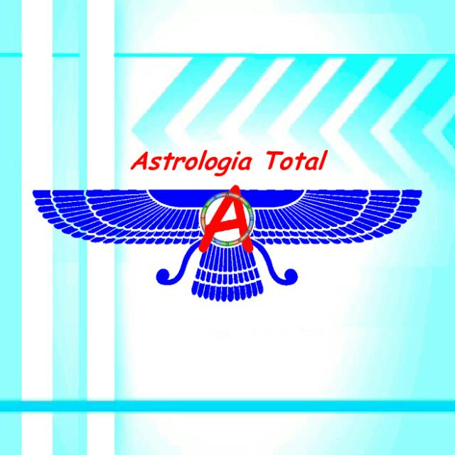

por Sidney Teixeira

A máquina do tempo chamada astrologia. É comum escutar falar em horoscopo e lembrar das dicas para os signos que lemos nas revistas e jornais. Mas o que realmente significa a palavra horóscopo? O que é mapa astral? Para se entender realmente a astrologia é necessário estudar pelo menos um pouco e poder descobrir que não se resume apenas em um signo de nascimento. Fica difícil dar alguma credibilidade a astrologia generalizando toda a vida de uma pessoa com um simpes signo. Em muitos casos encontramos pessoas tratando a astrologia como se fosse apenas uma brincadeira de criança, geralmente falando sobre tudo na vida de cada pessoa sem fazer um mapa sério. E tudo isso por faltar o interesse em estudar a astrologia com real seriedade. A palavra horóscopo quer dizer mostrador de horas. e um mapa astral é o que realmente podemos chamar de horoscopo na astrologia. O tão falado signo de nascimento de cada pessoa é chamado de signo solar. mas além do sol existe a lua e também os planetas. E no mapa astral de cada pessoa pode ser encontrado cada um dos planetas em um signo diferente. Portanto, além do signo solar, temos o signo lunar e também dos outros planetas. Mas além disso existem muito mais detalhes a serem levados em conta até a astrologia deixar de ser consderada algo tão superficial pela pessoa que não a conhece mais a fundo.